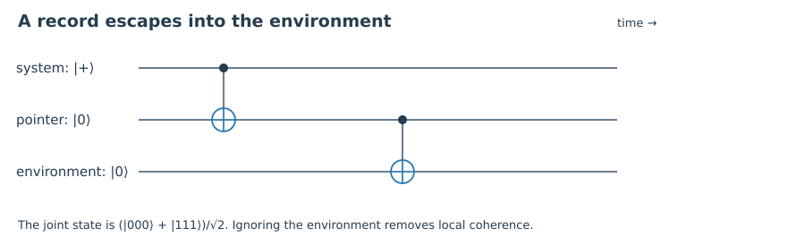

1. Quick check §
For α=β=1/√2 and real γ, find the eigenvalues of the reduced matrix.
Hint 1
Use the X eigenbasis.
Worked solution
They are (1+γ)/2 and (1−γ)/2; positivity requires |γ|≤1.
Chapter 02 · Draft lesson
How can interference disappear from view while remaining in the joint state?
Starting point: Chapters 1–1; familiarity with density operators and linear algebra.
Anchor example: A qubit records its Z value in many environmental qubits.
Method: Calculate a concrete experiment, identify the assumptions, then compare what different accounts explain.
Watch for: Decoherence suppresses accessible interference; it does not independently select one outcome.
This lesson includes explanations, worked examples, and problems with solutions. Advanced results whose proofs are outside the chapter are identified explicitly.
How can interference disappear from view while remaining in the joint state?
Suppose the laboratory has produced \(\alpha|0,A_0\rangle+\beta|1,A_1\rangle\). Now the environment also responds to the record. Its initial state evolves to \(|E_0\rangle\) or \(|E_1\rangle\), giving \(|\Psi\rangle=\alpha|0,A_0,E_0\rangle+\beta|1,A_1,E_1\rangle\). Nothing in this expression has been randomly discarded.
Trace out the environment and define \(\gamma=\langle E_1|E_0\rangle\). In the correlated system–pointer basis,
\[\rho_{SA}=\begin{pmatrix}|\alpha|^2&\alpha\beta^*\gamma\\\alpha^*\beta\gamma^*&|\beta|^2\end{pmatrix}.\]Every lost interference term has a visible mathematical cause: the overlap of the environmental records. Identical records leave |γ|=1; orthogonal records give γ=0. For N independent environment fragments with overlap g, the combined overlap is \(g^N\). Even moderately distinguishable records can suppress the off-diagonal entries rapidly.
Independence here is a model assumption. Correlated fragments need not obey this product law. Nor is a small overlap a proof that the environment is fundamentally irreversible. We have shown that the phase becomes inaccessible to operations confined to the chosen subsystem.

Worked check 2.1. If g=0.9 and N=100, estimate residual overlap.
It is 0.9¹⁰⁰≈2.656×10⁻⁵. This is strong suppression in the independent-fragment model, not exactly zero.
Why do tables have stable positions rather than stable superpositions of distant locations? A full answer depends on their interaction with the surroundings. In a simple monitoring model take \(H_{\rm int}=Z\otimes B\). The eigenstates of Z correlate with the environment without being mixed by this interaction. A superposition of them becomes entangled. The interaction therefore distinguishes a preferred set of candidate records.
This is not the claim that every environment selects the same basis. If the interaction instead monitors X, its stable alternatives differ. A system's own Hamiltonian may also compete with monitoring, so a realistic pointer basis can be approximate and time dependent. Robustness must be demonstrated with the actual dynamics.
\[\rho_{01}(t)=e^{-\Gamma t}\rho_{01}(0)\]is a useful Markovian dephasing model for constant Γ≥0. It leaves Z probabilities fixed while damping X and Y expectations. It specifies an ensemble channel, not a unique microscopic history. Many environmental models can realize it, and many stochastic descriptions can generate the same ensemble equation.
The conceptual gain is substantial: stable records and suppressed interference can be explained dynamically. The remaining question is how to understand the outcomes represented by those records. Decoherence contributes to several interpretations precisely because that further question is still available.
Worked check 2.2. At Γt=ln2, what happens to an initial |+⟩ state?
Its Bloch X coordinate falls from one to one half. The density eigenvalues become 3/4 and 1/4, so its purity is 5/8.
Consider the Bell state \(|\Phi^+\rangle=(|00\rangle+|11\rangle)/\sqrt2\) and the mixture \(\rho_{\rm mix}=(|00\rangle\langle00|+|11\rangle\langle11|)/2\). Each single qubit has density matrix I/2 in both cases. No local test on only one qubit distinguishes them. Yet the joint observable X⊗X has expectation one in the Bell state and zero in the mixture.
The same subsystem density operator can therefore arise from entanglement or from an ensemble of preparations. “Improper mixture” names the first origin; “proper mixture” often names the second, relative to an account of how the ensemble was prepared. The distinction concerns the global account, not an extra local observable omitted by the density operator.
In the two-qubit premeasurement, applying the same CNOT again restores |+⟩|0⟩. If a genuinely nonselective collapse has removed the joint coherence, this reversal instead leaves a 50–50 mixture of |0⟩|0⟩ and |1⟩|0⟩. An X test distinguishes the cases. Reversing an entire macroscopic environment is extraordinarily demanding, but difficulty of control and fundamental dynamical impossibility are different claims.
This distinction will return in Wigner's friend. Before assigning a conditional state, always ask which degrees of freedom the proposed future experiment can coherently access.
Worked check 2.3. Find a joint measurement that distinguishes Bell coherence from the mixture.
Measure X on each qubit and multiply the outcomes. The Bell state always has product +1; the mixture has products ±1 with equal probability.
These exercises draw on the whole chapter. Attempt each question before opening a hint, explain your reasoning, then compare it with the worked solution.
For α=β=1/√2 and real γ, find the eigenvalues of the reduced matrix.
Use the X eigenbasis.
They are (1+γ)/2 and (1−γ)/2; positivity requires |γ|≤1.
For γ=i/2, find the reduced-state purity.
Use the magnitude of the off-diagonal entries.
For equal populations, purity is (1+|γ|²)/2=5/8. The phase changes the Bloch direction, not its length.
How many independent fragments with g=1/2 reduce the overlap below 10⁻³?
Solve 2⁻ᴺ<0.001.
N=10 suffices since 2⁻¹⁰≈0.0009766; N=9 does not.
Which basis does X⊗B monitor?
Diagonalize the system operator.
The X eigenstates |+⟩ and |−⟩ acquire different environmental records and are unchanged as system states by this interaction alone.
Does damping off-diagonal elements specify a trajectory for one run?
Distinguish a channel from an unraveling.
No. An ensemble map constrains averages. A trajectory requires a measurement scheme or additional dynamical postulates.
Calculate the X expectation after dephasing time t for |+⟩.
Read the off-diagonal element.
It is exp(−Γt). Z remains zero and the state approaches I/2 as t grows.
Compute the ZZ expectation in the Bell state and the mixture.
Both have only 00 and 11 populations.
It is +1 in both, so ZZ does not detect their coherence difference.
Can a local measurement distinguish these two global states?
Compare the partial traces.
No. Both reduced states are I/2, hence every local POVM has identical probabilities.
Apply inverse premeasurement to the mixture.
Map 00→00 and 11→10.
The result is I/2 on the first qubit tensored with |0⟩⟨0| on the second. An X+ test succeeds with probability 1/2.
State precisely what decoherence establishes in this model.
Mention both a calculation and its scope.
It multiplies reduced off-diagonal entries by environmental overlap and explains lost local visibility. It does not turn the global pure state into one uniquely selected product term.